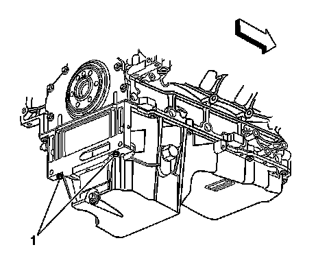
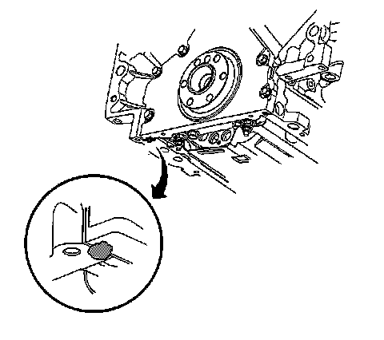
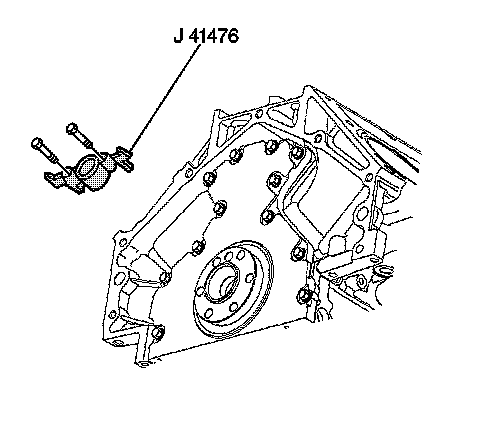

Rear Engine Plate: Service and Repair
Engine Rear Cover Replacement
Tools Required
J 41476 Front and Rear Cover Alignment Tool
Removal Procedure

1. Remove the automatic transmission flexplate, refer to Automatic Transmission Flex Plate Replacement.
2. Remove the oil pan-to-rear oil seal housing bolts (1).

3. Remove the rear oil seal housing bolts (517).
4. Remove the rear oil seal housing (518) and gasket (519). Discard the gasket.
5. Remove and discard the rear oil seal (141).
Installation Procedure
Important:
^ Do not reuse the crankshaft oil seal or rear cover gasket.
^ Do not apply any type of sealant to the rear cover gasket, unless specified.
^ The special tool in this procedure is used to properly center the crankshaft rear oil seal.
^ The crankshaft rear oil seal will be installed after the rear cover has been installed and aligned. Install the rear cover without the crankshaft oil seal.
- All gasket surfaces should be free of oil or other foreign material during assembly.
- The crankshaft rear oil seal MUST be centered in relation to the crankshaft.
- An improperly aligned rear cover may cause premature rear oil seal wear and/or engine assembly oil leaks.

1. Apply a 5 mm (0.2 in) bead of sealant, 20 mm (0.8 in) long to the oil pan to engine block junction. Refer to Sealers, Adhesives, and Lubricants.
2. Position a NEW rear oil seal housing gasket (519) and the housing (518) to the engine.
3. Install the rear oil seal housing bolts until snug. Do not overtighten.
4. Install the oil pan-to-rear oil seal housing bolts (1) until snug. Do not overtighten.

5. Rotate the crankshaft until 2 opposing flywheel bolt holes are parallel to the oil pan surface.
Important: The tapered legs of the alignment tool must enter the rear cover oil seal bore.
6. Install the J 41476 and bolts onto the rear of the crankshaft.
Notice: Refer to Fastener Notice.
7. Tighten the J 41476 bolts until snug. Do not overtighten.
1. Tighten the oil pan-to-rear oil seal housing bolts to 12 N.m (106 lb in).
2. Tighten the rear oil seal housing bolts to 30 N.m (22 lb ft).
3. Remove the J 41476.
4. Install a NEW crankshaft rear oil seal.
5. Remove the automatic transmission flexplate, refer to Automatic Transmission Flex Plate Replacement.